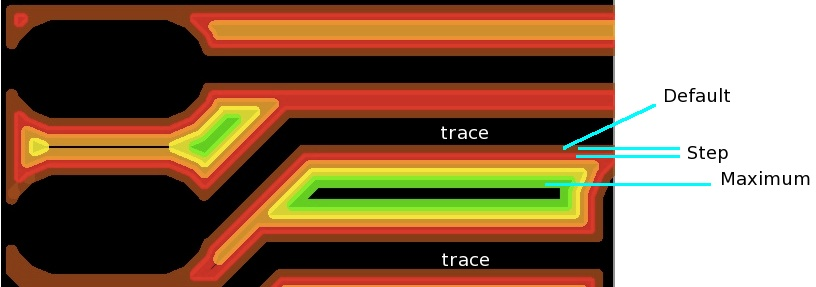

Copyright © 2004-2013 by John Johnson Software, LLC
All Rights Reserved
Please visit the Phorum or the
Yahoo! group
or the Facebook group
or email pcbgcode@pcbgcode.org.
OSI Certified Open Source Software.
This work is now distributed under the Artistic License from the Open Source Initiative.
I would like to see and possibly include any changes you make to the software. Thanks!
This program generates g-code for milling PC boards. It creates g-code for milling trace outlines for the Top and Bottom layers. This can be done with a progressive offset so that slivers between most traces are removed. It also generates drill files as seen from the top and bottom, with pauses for changing bits. It generates milling layer data as seen from the top or bottom of the board. It also generates text engraving code for any text on the Milling layer.
There is a website with forums, downloads, etc. for pcb-gcode here.
There is a Yahoo! group dedicated to the users of pcb-gcode. There you will find other users, a mailing list for discussing pcb-gcode, photos of user’s machines and boards, databases of suppliers, bugs, faqs and suggestions, and more. Also, please add yourself to the pcb-gcode Frappr! map I like to see where the people are that use pcb-gcode. I have never received any spam from Frappr!.
To use this version, you must have Eagle 5 or above.
If you want to use Eagle 4.16x or 4.17, please use pcb-gcode 3.3.3.
Unzip the pcb-gcode archive and move the files to a folder. I like to create an eagle folder in my $HOME directory, then create a ulp folder there, and put the pcb-gcode files in it. In the Eagle Control Panel, in Options | Directories… add the path to the ulp folder you created as the first entry in the User Language Programs option. Here are typical paths for the operating systems Eagle supports:
|<.OS|_<.In Control Panel|<.Real Paths|
|Mac OS X|$HOME/Documents/eagle/ulp:$EAGLEDIR/ulp|/Users/John/Documents/eagle/ulp
/Applications/EAGLE/ulp|
|Linux|$HOME/eagle/ulp:$EAGLEDIR/ulp|/home/john/eagle/ulp
/opt/eagle/ulp|
|Windows|$HOME/eagle/ulp;$EAGLE/ulp|C:\Documents and Settings\John\My Documents\eagle\ulp
C:\Program Files\EAGLE\ulp|
From Eagle’s Board Editor (that’s where you lay out your board), in the command line (just below the tool bar at the top) type:
run pcb-gcode-setup
The first time you run pcb-gcode-setup, you select the style of g-code to suit the controller for your machine, such as TurboCNC, EMC, Mach3, etc. You may also select Metric or Imperial units, the size of tools you use, and more. If you want to run setup again later, just use the same command:
run pcb-gcode-setup
I usually run pcb-gcode-setup, check the settings, then click the Accept and make my board button. If you know that the settings are okay, and you just want to generate g-code files, from the board editor run this command:
run pcb-gcode
You can change the names of the g-code files that are created. Assuming the board you are working on is named board, and you are using the default file name settings, the files are named as follows:
|<.File Name|<.Contents|
|^.board.top.etch.tap|Outline of traces for the top layer.|
|^.board.bot.etch.tap|Outline of traces for the bottom layer. Note that the coordinates in this file are negative. That means when milling the bottom, you origin at the right side of the board.|
|^.board.top.drill.tap|Drill file for drilling from the top of the board. Asks for drill bits in succession, smallest to largest. A table of all sizes needed is at the beginning of the file.|
|^.board.bot.drill.tap|Drill file for drilling from the bottom of the board.|
|^.board.top.mill.tap|Milling layer data as seen from the bottom of the board.|
|^.board.bot.mill.tap|Milling layer data as seen from the top of the board.|
|^.board.top.text.tap|Text from the Milling layer to be engraved. The text is cut like it would be written with a pen, it is not outlined like text on the Top or Bottom layers. It is much easier to read, and looks a lot better.|
|^.board.bot.text.tap|Text from the Milling layer to be engraved.|
I also like to assign shortcut keys to run pcb-gcode and the setup program. Open a board in Eagle. In Options | Assign, click the New button to make each of the assignments. Of course feel free to use different key combinations.
|<.Keys|<.Assigned command|
|Shift+Ctrl+S|run pcb-gcode-setup|
|Shift+Ctrl+R|run pcb-gcode|
Be sure and set Units to the correct unit of measure. You can set the Units on the Machine tab.
These are the options you will use the most. They control which files are created, the depth settings for tools, etc.
| Generate top outlines | Track outlines for the top layer. |
| Generate top drills | Drill holes to be drilled from the top of the board. |
| Generate bottom outlines | Track outlines for the bottom layer. |
| Generate Bottom Drill | Drill holes to be drilled from the bottom of the board. |
| Mirror | Mirrors the outlines and drill holes for the bottom of the board. This is used if your preview (backplot) program doesn’t handle negative X coordinates very well. This is becoming obsolete since there is a built-in previewer now. |
| Preview | Use the built-in previewer to view what the generated g-code should look like when milled. |
| Generate milling | Milling layer data for the board. Generates g-code files that can be used from the top or the bottom side of the board. Any wires (lines) or arcs on the Milling layer will be included in these files. |
| Generate text | g-code to engrave text from the Milling layer. This text will be “written” using g-code for each line in the character. This is different from text that is on the Top and Bottom layers that is outlined or “isolated” just like the tracks are. |
| Spot drill holes | When outlining the tracks, make a small “starter hole” where each drill hole will be. Later when you drill the board, this will help the drill bits start cutting, reducing breakage and improving accuracy. |

| Default | The first pass around the tracks will offset the tool this amount. You can start with 0.001"/0.02mm |
| Maximum | The maximum isolation value. Try 0.020"/0.5mm |
| Step size | Amount to increment the isolation after each pass. This depends on how wide the path is that your tool cuts. For instance, if you use a conical bit and it cuts a path 0.007"/0.2mm wide, you could try 0.005"/0.17mm here. |
| Etching Tool Size | How wide your cutting tool cuts. |
If you set the options shown above, the cutting tool will make five passes around each track. The first pass will be 0.001"/0.02mm outside the track, the second will be 0.006"/0.15mm, and so on.
| Z High | Z position that is high enough to clear fixtures, etc. |
| Z Up | Just above the board. |
| Z Down | How deep the etching cuts will be. |
| Drill Depth | How deep to plunge the drill when drilling holes. |
| Drill Dwell | How long to pause at the bottom of each hole when drilling. |
Select the unit of measure your controller uses. Please note that a mil is 0.001", and not an millimeter. A micron is 0.001mm.
| Position X, Y & Z | Where to move the tool when it is time to change bits. |
| Spin Up Time | How long to wait for the tool to come up to speed. Your controller should probably take care of this, but it is here if you need it. |
| X Y | How fast the X & Y axes should move when cutting traces. |
| Z | How fast the Z axis should move when plunging into the board. |
If a move is smaller than this number, it is not output to the g-code file.
For example, two points might be at:
| (0.00120984, 1.2335234) |
| (0.00121065, 1.2335234) |
Since the change is very small, and the coordinates in the g-code file are rounded a small amount,
the coordinates above would be written to the g-code file as:
| G01 X0.00121 Y1.23352 |
| G01 X0.00121 Y1.23352 |
So we can set epsilon to, say, 0.0001" and avoid the duplicate command.
This allows pcb-gcode to substitute drill bits that you have for sizes needed in Eagle parts.
For instance, if a part has 0.030" holes, and you have a 0.032" drill bit, you can use that.
You can find full details in the sample rack file. It is settings/default.drl.
You can create rack files for each board, if you want to. Just name the file board.drl, where board is the name of your board.
If pcb-gcode does not find a board.drl file, it will look for the file you select in this option.
If it cannot find that either, it will look for settings/default.drl.
If it cannot find that, and you have something in this option, it will give you an error that it cannot find a rack file.
If this option is blank, you won’t get an error, even if it cannot find a rack file. It will generate the file for drilling your board, and use as many drill sizes as the Eagle libraries use.
The first time you run pcb-gcode-setup, this will be the only tab available.
On this tab you select the style g-code that you want pcb-gcode to generate.
If a profile is available for your machine, you will probably only need to use this once. Just select the profile you want, then click the Accept button.
You can customize the g-code generated by editing the settings/gcode-defaults.h file. When you are finished, you should edit the Author and Description at the top of the file, and copy it to a profiles/yourmachine.pp file. Then it will appear in this list. If you make major changes (like for a new machine), please also email it to me, so I can make it available to everyone.
Select the comments to include in the g-code files. This can help you later when you try to figure out where the g-code came from, how deep it will be cut, etc.
| Use user gcode (from user-gcode.h) | You can add your own g-code to be included at various times in the files generated. Please see this document for full details. |
| Debug Flag | If things aren’t working well, I might ask you to turn this on, then send me the g-code files generated. |
| Do tool change with zero step | This helps you set the depth of the tool. When it is time to change tools, the tool will move to the tool change position. When you change bits, insert the new bit high into the chuck. Tell your control software to “go”. The Z axis will move down to 0.0. At this point you can loosen the chuck, let the bit drop to the board, then tighten the chuck. |
| Flip board in Y instead of X | When you turn the board over to etch or drill the bottom side, with this option on, you will turn the board in the Y axis (up and down) rather than the X axis (left to right). |
| Compact gcode | Eliminates redundant commands (such as G01) in the gcode. |
| Use line numbers? | Adds a line number at the beginning of each line. |
| Use simple drill code | Uses G00 and G01 commands to drill holes, rather than G82. This option is here for previewers and controllers that do not understand the G82 command. |
Skeleton for future plugins.
Currently includes a basic RPN calculator.
| Show progress menu | Shows a rudimentary progress menu in Eagle while g-code files are being generated. Probably not needed these days. |
| After showing progress, restore menu file (blank for none) | If you use the Show progress menu option, and want to restore another menu when it is finished, put the file name here. |
| Reset to Factory Defaults | When you can’t get anything to work right, try this. It copies a set of “safe” settings from the safe_options folder. This probably isn’t needed. |
Andrew Payne has an overview of using pcb-gcode.
Create your board in Eagle. I usually change the Width in the Net Classes (under the Edit menu) to 0.030" if I’m trying to squeeze a trace between IC legs, or 0.040" to 0.050" otherwise. When you Autoroute, the router will use the width that you specified. Keep in mind that the traces need to be a certain distance apart, or the outline routines will consider them one and the same, and glob them together. Set the Clearances in DRC to the size of your cutter to check for this. Change the Restring parameters in DRC to make the pads and vias larger, if you find that they are to small after milling the traces. You can also try the pcb-gcode.dru included in this archive. In the DRC window, click the Load button to load it.
In the command line area (between the board and the toolbar with buttons) run pcb-gcode. Files will be generated to create your board and stored in the same place as the board file.
run pcb-gcode
Mill your board using TurboCNC, EMC, Mach, etc. I mill mine in this order: board.top.etch.tap, board.top.drill.tap, flip the board (in X, though you can change this), origin at the same point (which is on the right side now), and run board.etch.bot.tap.
To stop the auto-router from doing annoying things like putting vias under ICs and components, create a rectangle in layer vRestrict under the part. I like to put a rectangle of tRestrict around each pad, or set of pads, for ICs and components. This keeps you from having to solder on the top of the board. You can make these changes permanent by editing the libraries.
You can use the built-in previewer now, or if you don’t want to use it, I highly recommend using a simulator to view your g-code before committing it to copper. CNC Simulator is free. See also VEGA DATA-View. If you know of a good NC viewer for the Mac or X11 on the Mac, please drop me a line.
My goal, and probably yours, is to mill tracks as wide as possible, without shorting to other tracks, pads, or vias, and with enough spacing between so that you can solder the pads without solder bridges. This procedure outlines how I fine tuned my setup to accomplish that.
Included in this release are a board and schematic (04151_lcdi2c.*), pictures are available in the Yahoo! pcb-gcode group.
First, you should establish the safe minimum track width your router can produce. Experimentation is your best bet here. You’ll also want to determine what size cutter to use. I’ve heard the bits from Think & Tinker are quite good. Until I order the Think & Tinker bits, I’m using a 60 degree half round carbide bit. Most cutters are tapered, so depth control is essential. If the PCB is higher, the cut path will be wider, hence the tracks will be narrower, if there is anything left. On my router, I use a piece of wood with a cavity milled out that is the side of my PCB stock. I secure the PCB using fiberglass double-sided carpet tape. The adhesive is very agressive, and works well.
After experimentation, I determined that I could mill 16mil tracks. This allows me to squeeze a track between IC pads, which was one of my original goals. I laid out the board using a 16mil track width (See 04151_lcdi2c.brd). To figure out the right tool size, I began at 0.001, and worked my way up. Look at this picture 0_005.jpg . In the center, you can see three IC pads. There is a track between the bottom two pads. You can see (hopefully!) that the track and the IC pads have a small amount of space between. To maximize the track and pad size, we want to minimize this space. The next picture is 0_007.jpg . This is when I tried 0.007 as the tool size. You can see that the track and pads are wider, and that the lines of each are still separate and distinct. Now look at 0_009.jpg. See anything wrong? The third IC pad down, and on the left had merged into the track next to it. Not a good thing. So we need to back off on the tool size. As I was writing this, I noticed that at 0.007, the IC looks fine, but some of the tracks and pads at the 14 pin connector had merged. So, 0.005 is the ideal tool size.
At this point, you probably want to mill a board, and see how everything looks. If it’s okay, you can set up the DRC to make sure all your boards have the necessary clearance for milling.
We can use Eagle’s DRC (Design Rule Check) tool to help design boards that will mill correctly. To do this, we use a similar technique to the one above, start with approximate values, and adjust them until they are right. I decided to start with 0.007. See the picture setting_clr_0_007.jpg . When I clicked the Ok button, I got the list of violations show in clr0_007.jpg . At this point, I’m only worried about the Clearance errors. You can see there are only three, and they are justified, as shown by the zoomed in portion of the board. I increased the clearance to 0.008 to see what would happen. The result is shown in clr0_008.jpg . A lot of errors. Since I milled this board and know that it is okay as is, I want to use 0.007 as the clearance value. If a track is closer than that to a pad, I want an error, because it probably won’t mill correctly. Now I go into DRC and set all the clearances to the value that I determined was right, in this case 7mils (0.007). See setting_other_clr_0_007.jpg . You may want more pad-to-pad and pad-to-via clearance. Again, experiment to find out.
The final product can be seen in the pcb.jpg picture. No, this isn’t the 04151 board that I provided the board and schematic for. It’s already loaded and in service. We can see a few things from this board though. Look at the circled area labeled A. There are small slivers there that could easily peel up and short the adjacent tracks. This can be corrected by making ISO_MIN smaller, in case a path never was made through this area since they are so small. You might try making ISO_STEP smaller, so that more passes will be made through the area. You can also try making ISO_MAX larger, in case the over all area milled away needs to be larger. Although not the case for the A area, you can see in the D area that more passes would have cleaned out the rest of the slivers from around the “A” character. Beginning in area B is a larger sliver. This one should be okay, since it is wider, and not at risk of peeling so easily. Now take a look at area C. Those are thermals around the IC pads, and they look great. Thermals are probably the smallest area to be milled away, except for the inside spaces of letters like A B, etc. Keep an eye on the thermals when changing parameters.
Have fun! Regards, JJ{kind=link}
{kind=link}
{kind=link}
{kind=link}
{kind=link}
{kind=link}
{kind=link}
{kind=link}
{kind=link}